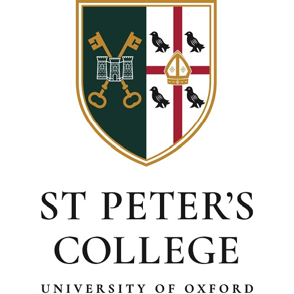
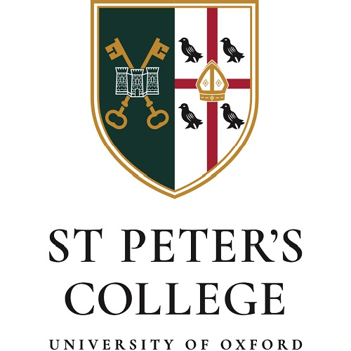

I am an Eric and Wendy Schmidt AI in Science research fellow at the University of Oxford, where I also hold a secondment as Stipendiary Lecturer in Biochemistry. I am a computational biologist developing artificial intelligence tools to engineer proteins. I work closely with Prof. Charlotte M. Deane and Prof. Yee Whye Teh, in the highly interdisciplinary environment of the Department of Statistics.
Prior to joining the University of Oxford as a PhD student, I trained as a chemist at the universities of Oviedo (Spain) and Manchester (UK). I also enjoyed a brief stint developing generative AI methods for small molecule drug discovery at the lab of Prof. Alán Aspuru-Guzik, back then at Harvard University (US), which first showed me the opportunities of combining cutting-edge machine learning algorithms with a chemical background and good understanding of biology.
My central research interest is the development of artificial intelligence tools for protein engineering and protein design, although I am also generally interested in language models, drug discovery, deep learning for 3D point cloud data, enzymology, and other topics in computational protein science. To read more about my research interests and contributions, check out my Research page. In this page, I write about the latest developments in biotech and TechBio, and my opinions on the future of the field. Some of my passions outside of science are molecular cuisine, social dancing and strength conditioning, and I occasionally write about these as well.
 
